第03讲 解题技巧专题：一元一次方程中含参数的问题
第03讲 解题技巧专题：一元一次方程中含参数的问题
(6类热点题型讲练)

目录
【考点一 利用一元一次方程的定义求字母参数】 1
【考点二 利用一元一次方程的解求代数式的值】 2
【考点三 利用一元一次方程的解相同求字母参数】 4
【考点四 求一元一次方程含字母参数的方程的解】 5
【考点五 一元一次方程含字母参数的解为整数解问题】 7
【考点六 一元一次方程含字母参数的新定义型问题】 10

【考点一 利用一元一次方程的定义求字母参数】
例题：（23-24七年级下·湖南衡阳·期中）若关于 的方程
的方程 是一元一次方程，则
是一元一次方程，则 的值是 ．
的值是 ．
【答案】
【知识点】一元一次方程的定义
【分析】本题主要考查了一元一次方程的定义，只含有一个未知数，且未知数的次数为1的整式方程叫做一元一次方程，据此求解即可．
【详解】解；关于的方程是一元一次方程，
∴
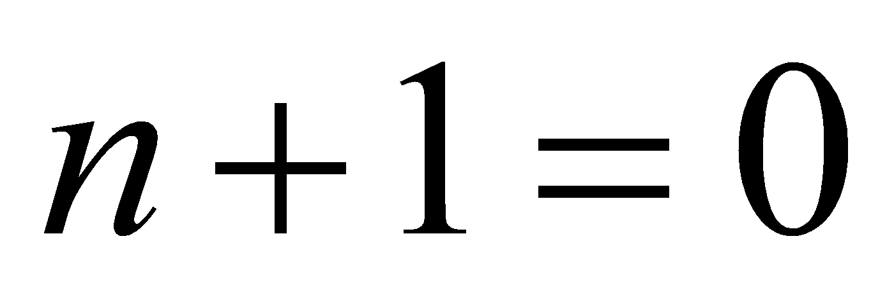
，∴ ，
，
故答案为：0．
【变式训练】
1．（23-24七年级上·四川泸州·开学考试）已知方程 是关于的一元一次方程，则
是关于的一元一次方程，则 的值是 ．
的值是 ．
【答案】
【知识点】一元一次方程的定义
【分析】本题主要考查了一元一次方程的一般形式，只含有一个未知数，未知数的指数是1，一次项系数不为0．
根据一元一次方程的特点得到
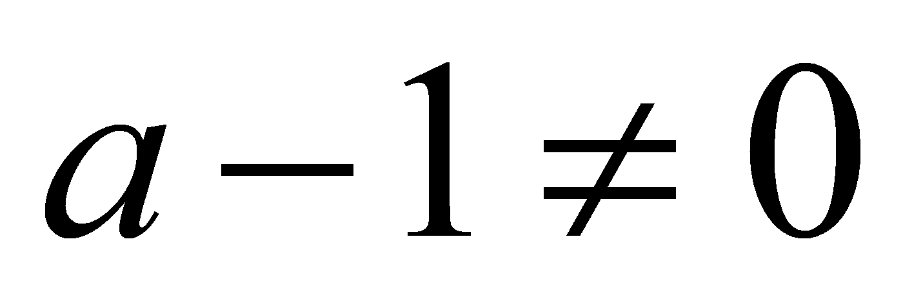
，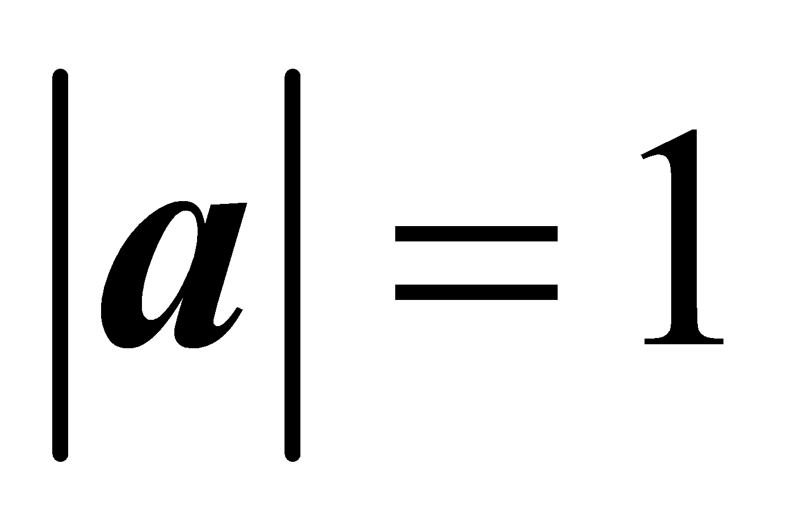
，进而求解即可．【详解】∵方程
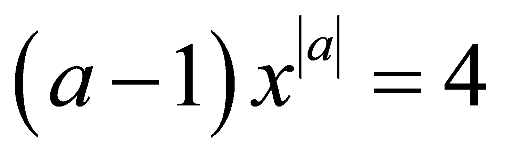
是关于的一元一次方程，∴，
∴
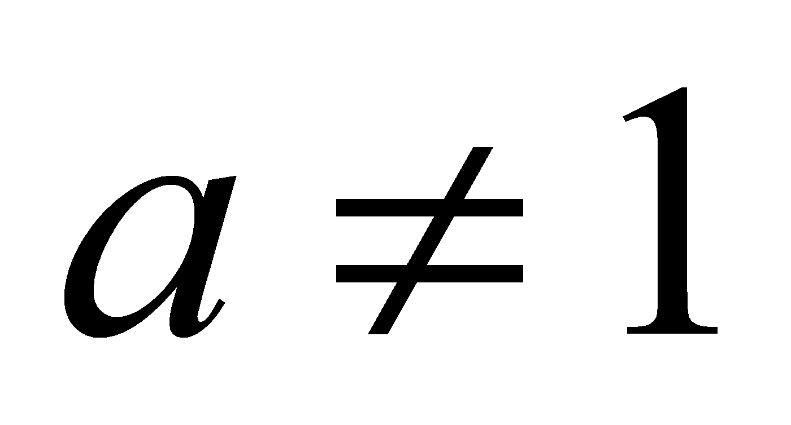
，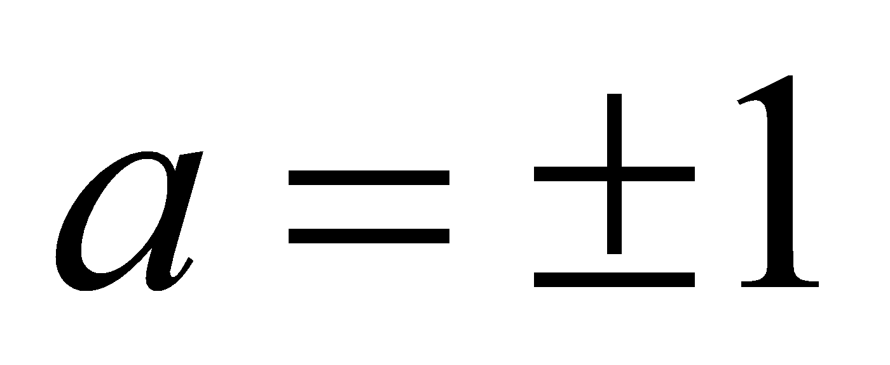
∴a=−1．
故答案为：．
2．（23-24七年级下·重庆万州·期末）若 是关于x的一元一次方程，则m的值是 ．
是关于x的一元一次方程，则m的值是 ．
【答案】
【知识点】一元一次方程的定义
【分析】本题考查一元一次方程的定义，根据一元一次方程的定义可得
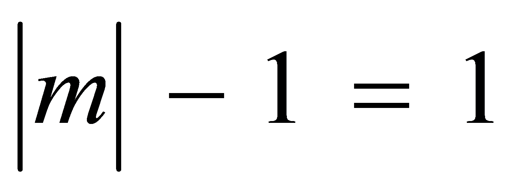
， ，求解即可．
，求解即可．【详解】由题意得：，解得：
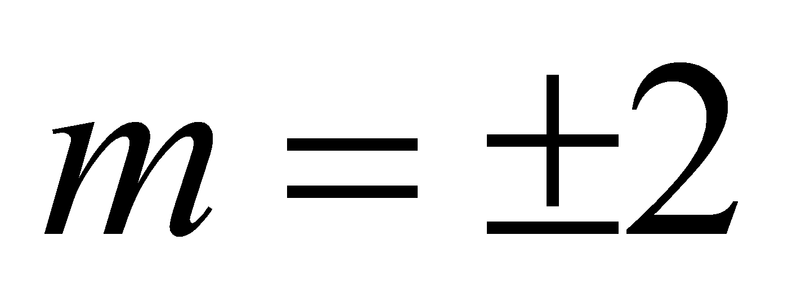
∵，即
∴
故答案为：．
3．（23-24七年级上·江苏无锡·阶段练习）已知
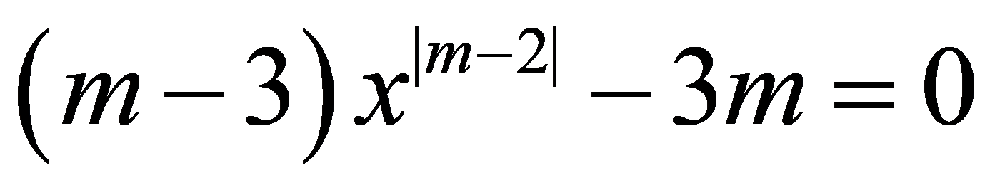
是关于x的一元一次方程，则m的值 ．【答案】
【知识点】一元一次方程的定义
【分析】本题考查了一元一次方程的定义，根据含有一个未知数并且未知数的次数为1的整式方程，据此即可作答．
【详解】解：∵是关于x的一元一次方程，
∴
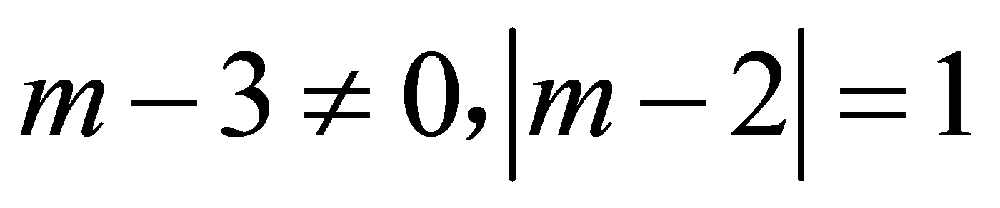
，解得
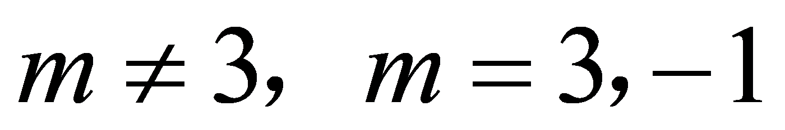
，∴ ，
，
故答案为：．
【考点二 利用一元一次方程的解求代数式的值】
例题：（23-24七年级上·江苏扬州·期末）如果 是方程
是方程
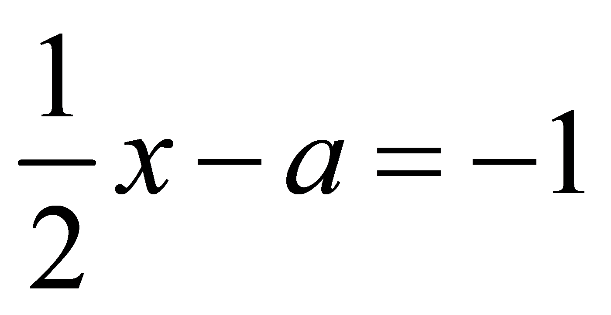
的解，那么的值是 ．【答案】2
【知识点】方程的解
【分析】本题主要考查了方程的解，掌握方程的解是方程成立的未知数的值成为解题的关键．
将代入方程求得a的值即可．
【详解】解：将代入方程可得：
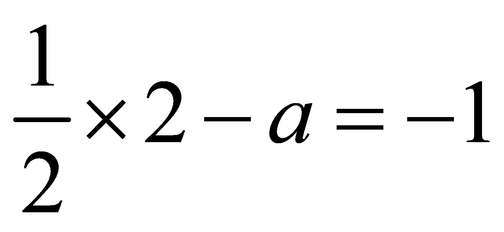
，解得： ．
．故答案为2．
【变式训练】
1．（23-24七年级上·湖南株洲·期末）若 是关于x的方程
是关于x的方程 的解，则的值为 ．
的解，则的值为 ．
【答案】
【知识点】方程的解、解一元一次方程（一）——合并同类项与移项
【分析】本题考查了一元一次方程的解的定义，以及解一元一次方程，将代入原方程是解题的关键．使方程左右两边的值相等的未知数的值是该方程的解．将方程的解代入方程可得关于a的一元一次方程，从而可求出a的值．
【详解】解： 是关于x的方程的解，
是关于x的方程的解，

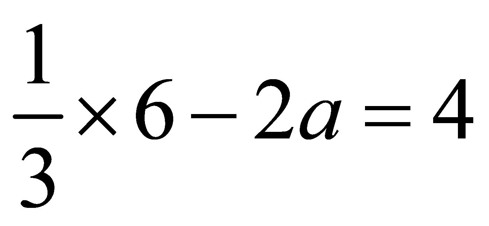
，解得 ，
，
故答案为：．
2．（23-24九年级上·福建福州·开学考试）若是关于x的方程
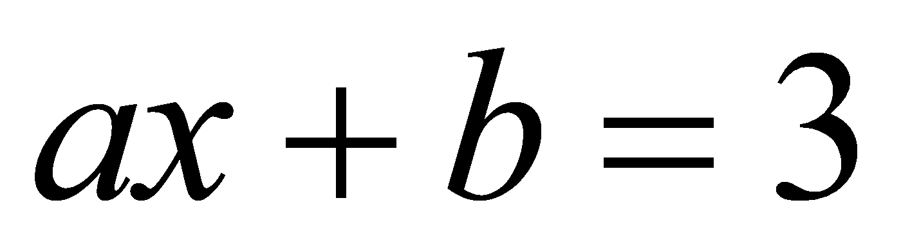
的解，则代数式 的值是 ．
的值是 ．【答案】
【知识点】方程的解
【分析】把代入得
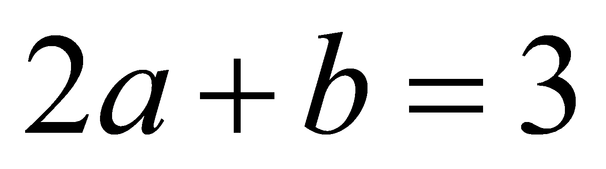
，则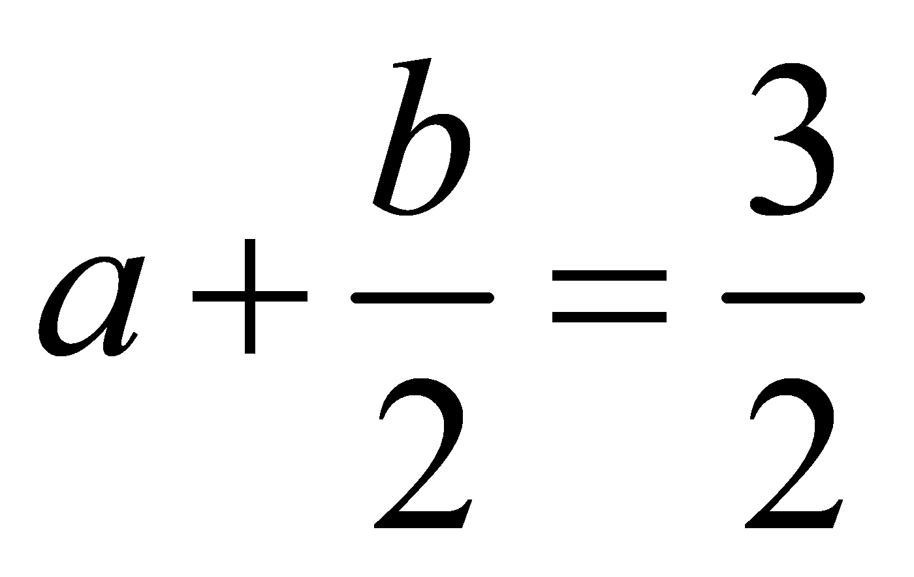
，即可解答．【详解】解：把代入得：，
∴，
∴
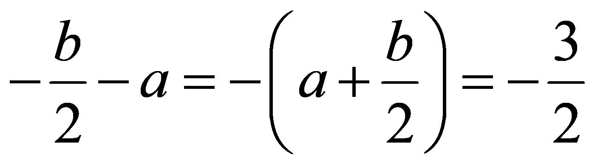
故答案为：．
【点睛】本题主要考查了方程的解，解题的关键是掌握使方程两边相等的未知数的值是方程的解．
3．（23-24七年级上·陕西西安·阶段练习）如果 是方程
是方程
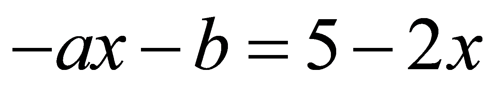
的解，那么 ．
．【答案】1
【知识点】方程的解
【分析】本题考查了一元一次方程的解，先把代入方程得到 ，再把
，再把 变形为
变形为 ，然后利用整体代入的方法计算．
，然后利用整体代入的方法计算．
【详解】解： 是方程的解，
是方程的解，
 ，
，
 ．
．
故答案为：1．
4．（24-25九年级上·全国·课后作业）已知关于x的一元一次方程 的解是
的解是 ，则
，则 的值为 ．
的值为 ．
【答案】0
【知识点】方程的解
【详解】把代入方程中得， ，即
，即 ，
，
∴
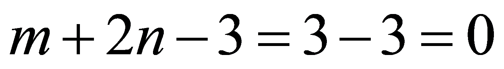
．【考点三 利用一元一次方程的解相同求字母参数】
例题：（23-24七年级上·广东湛江·期末）若方程
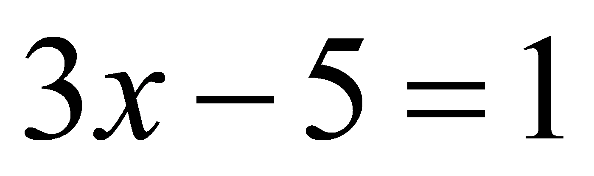
与方程 有相同的解，则
有相同的解，则 的值等于 ．
的值等于 ．【答案】4
【知识点】方程的解、解一元一次方程（三）——去分母、解一元一次方程（一）——合并同类项与移项
【分析】本题主要考查了一元一次方程的解，先求出方程的解，把代入方程，求出a的值，最后得出答案即可．
【详解】解：解方程得：，
把代入方程得：
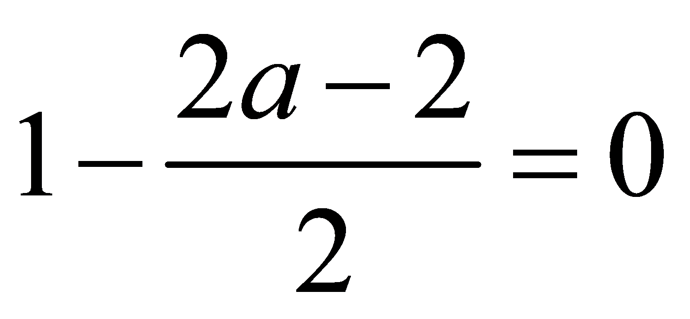
，解得：，
∴
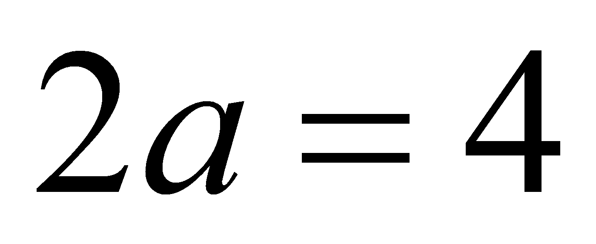
，故答案为：4．
【变式训练】
1．（23-24七年级下·福建泉州·期末）如果关于的方程 和方程
和方程
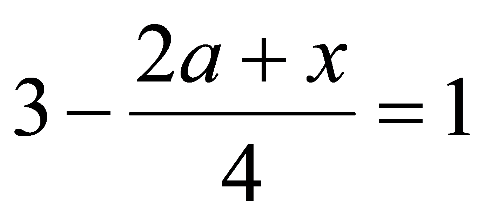
的解相同，那么的值为 ．【答案】3
【知识点】方程的解、解一元一次方程（一）——合并同类项与移项、解一元一次方程（三）——去分母
【分析】本题考查了一元一次方程的解以及解一元一次方程，先解出的值，再代入，即可解出a的值．
【详解】解：∵关于的方程和方程的解相同，
∴由，得
把代入，
得
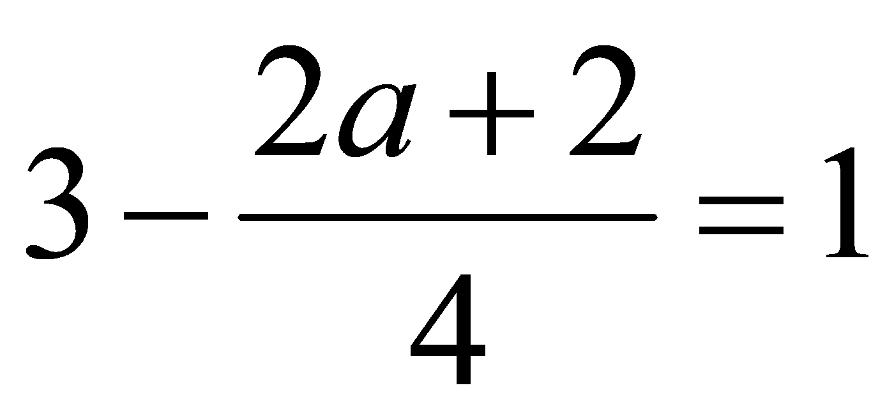
整理得
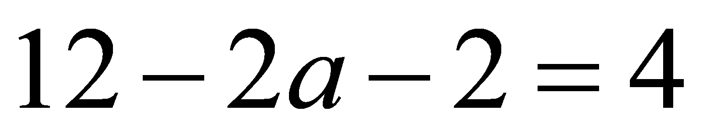
即
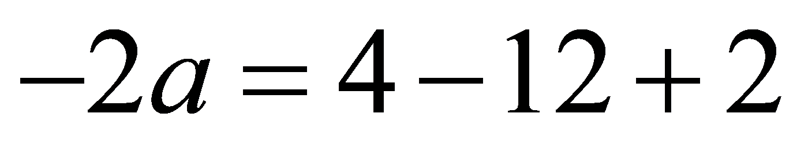
则
故答案为：3
2．（23-24七年级下·四川眉山·期中）已知关于的方程 的解与方程
的解与方程 的解相同，则
的解相同，则
【答案】 或
或
【知识点】方程的解、解一元一次方程（三）——去分母
【分析】此题考查了一元一次方程的解和解一元一次方程，先解得到 ，再把代入
，再把代入
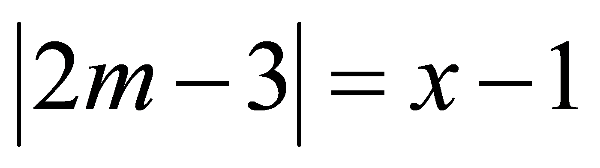
即可得到m的值．【详解】解：解得到，
把代入得到
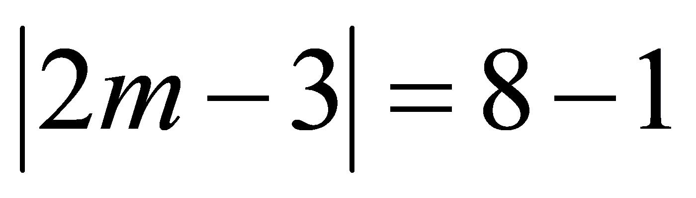
，解得 或；
或；
故答案为：或．
【考点四 求一元一次方程含字母参数的方程的解】
例题：（23-24七年级上·湖北武汉·期末）如果关于的方程 的解
的解 ，则关于
，则关于 的方程
的方程
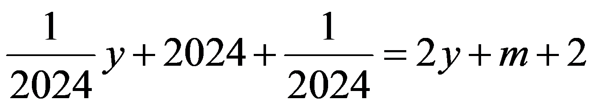
的解 ．
．【答案】
【知识点】方程的解
【分析】本题考查一元一次方程的知识，解题的关键是对方程 变形为
变形为 ，令
，令 ，则原方程变为
，则原方程变为
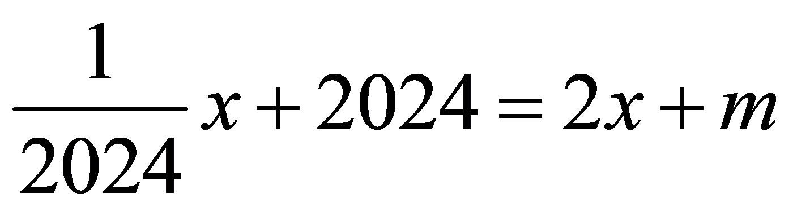
，根据方程的解为 ，则
，则 ，即可．
，即可．【详解】∵关于的方程为，
∴对方程进行变形为：，
令，
∴原方程变为：，
∵方程的解为：，
∴，
∴ ．
．
故答案为：．
【变式训练】
1．（23-24七年级上·江苏扬州·期中）已知关于的一元一次方程 的解为，则关于的一元一次方程
的解为，则关于的一元一次方程 的解为 ．
的解为 ．
【答案】
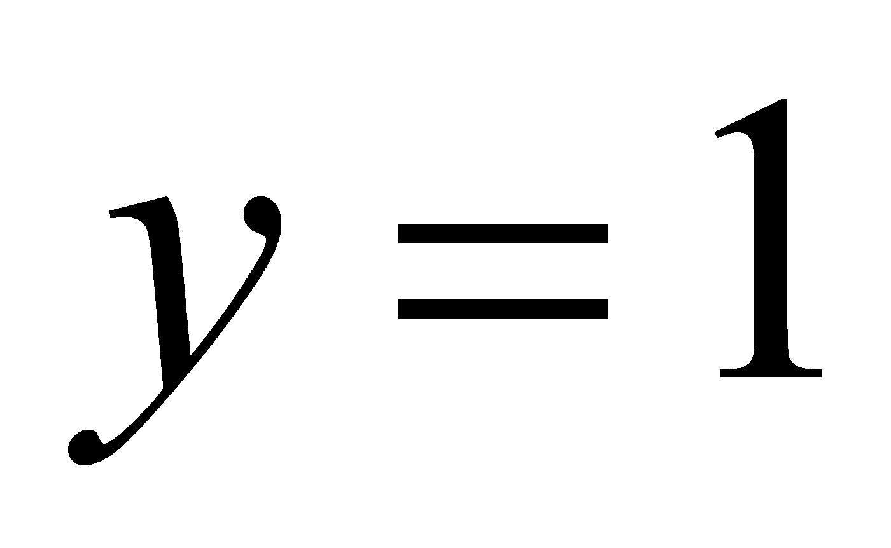
【知识点】方程的解
【分析】本题主要考查一元一次方程的解，熟练掌握一元一次方程的解是解题的关键；所以由题意易得 ，然后可得
，然后可得
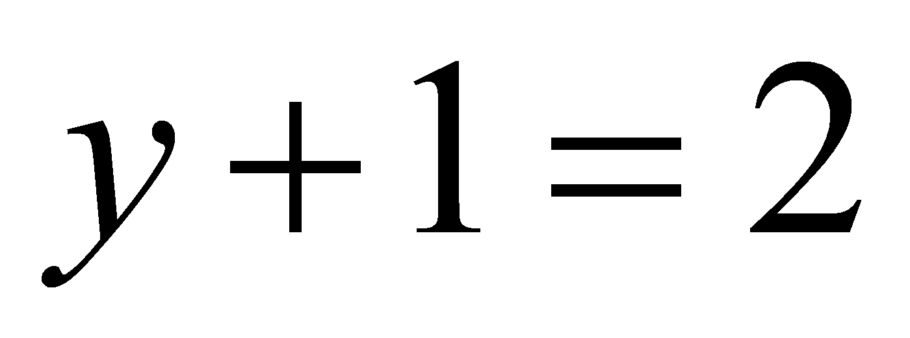
，进而求解即可．【详解】解：由方程可变形为，
因为关于的一元一次方程的解为，
所以把 看作一个整体，则方程的解为，
看作一个整体，则方程的解为，
解得：，
故答案为．
2．（23-24七年级上·浙江嘉兴·期末）已知为实数，关于的方程 的解为
的解为 ，则关于的方程
，则关于的方程
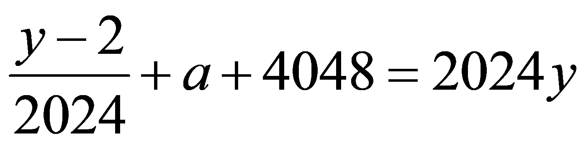
的解为 ．【答案】7
【知识点】方程的解
【分析】本题考查了一元一次方程的解，正确掌握转化思想是解题的关键．两个方程形式相似，第一个方程的解为，则第二个方程中
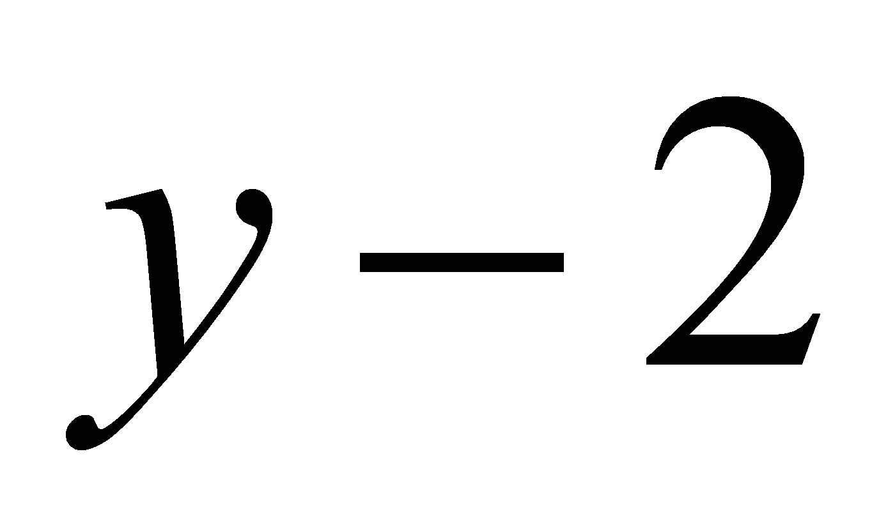
与x对应，可得 ，可得结果．
，可得结果．【详解】解：关于的方程的解为，
则
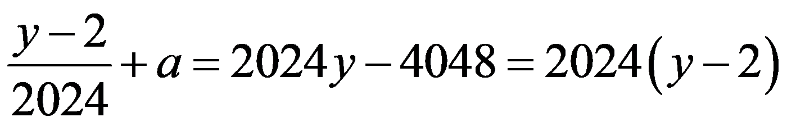
，∴，
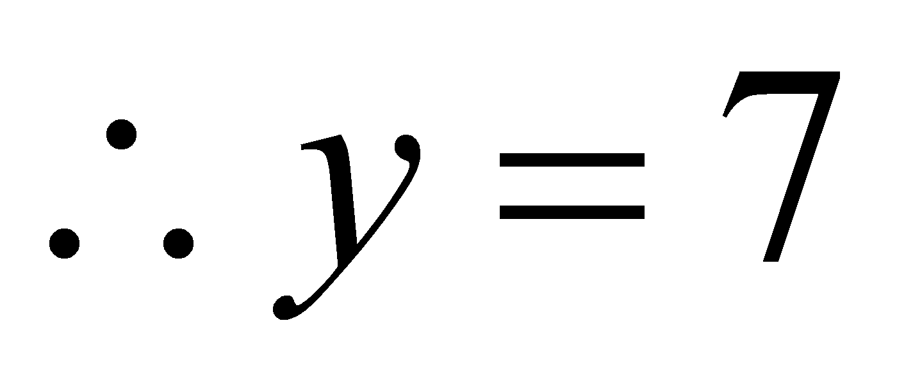
．故答案为7
3．（23-24七年级上·江苏南通·期末）若关于的一元一次方程 的解为
的解为 ，则关于的一元一次方程
，则关于的一元一次方程 解为 ．
解为 ．
【答案】
【知识点】方程的解
【分析】本题考查了一元一次方程的解，将一元一次方程变形可得 是方程
是方程 的解，即可得出答案，解题的关键是得出是方程的解．
的解，即可得出答案，解题的关键是得出是方程的解．
【详解】解：将一元一次方程变形得：，
关于的一元一次方程的解为，
 是方程的解，
是方程的解，
解得：，
故答案为：．
【考点五 一元一次方程含字母参数的解为整数解问题】
例题：（23-24七年级上·福建福州·期末）若关于的一元一次方程 有非负整数解，则符合条件的所有整数
有非负整数解，则符合条件的所有整数 的值和为 ．
的值和为 ．
【答案】
【知识点】方程的解
【分析】此题考查了此题考查了一元一次方程的解，先求出方程的解，根据解为整数，为整数，求出值，进行计算即可，正确的求出方程的解是解题的关键．
【详解】解： ，
，
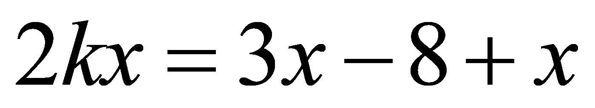
，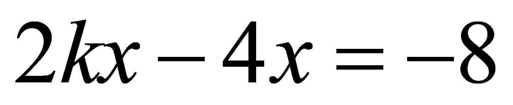
，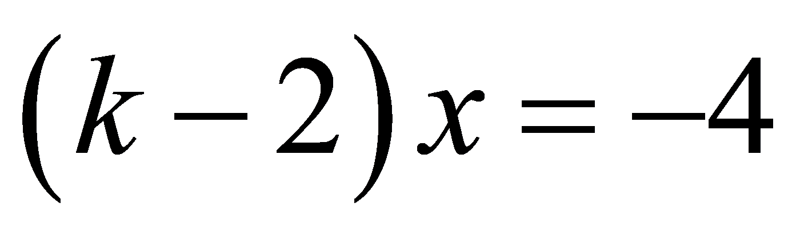
，∵方程有非负整数解，且为整数，
∴
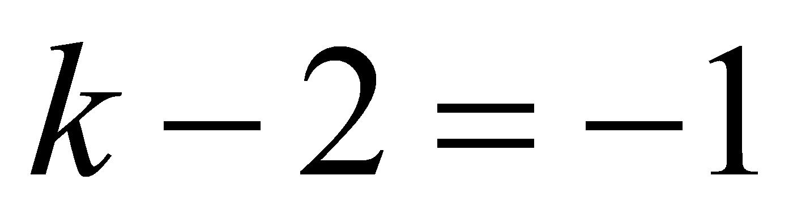
或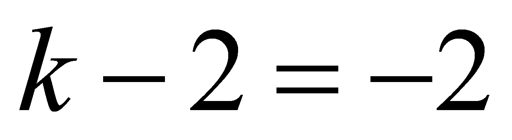
或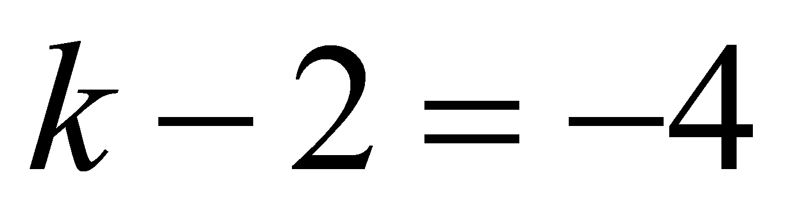
，解得：为或或，
∴的值和为
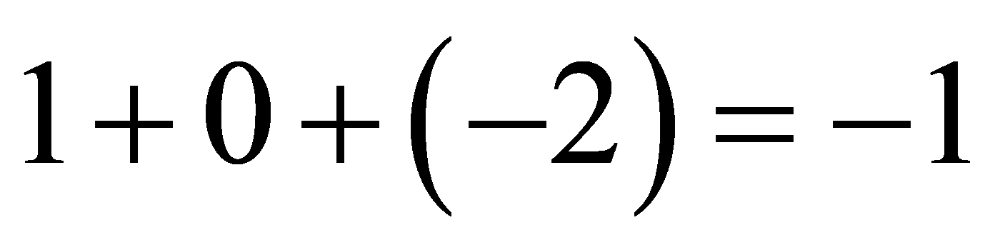
，故答案为：．
【变式训练】
1．（23-24七年级上·浙江台州·期中）关于的一元一次方程 的解是整数，则符合条件的所有整数的值的和为 ．
的解是整数，则符合条件的所有整数的值的和为 ．
【答案】6
【知识点】方程的解
【分析】此题考查了一元一次方程的解，方程的解即为能使方程左右两边相等的未知数的值．
表示出方程的解，由方程的解是整数确定出满足题意整数的值，求出之和即可．
【详解】解：方程
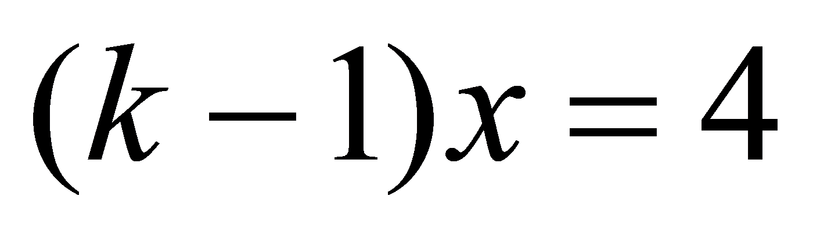
，解得：
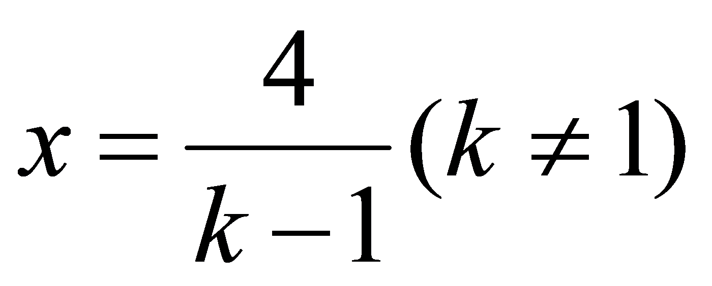
，∵方程的解为整数，
∴
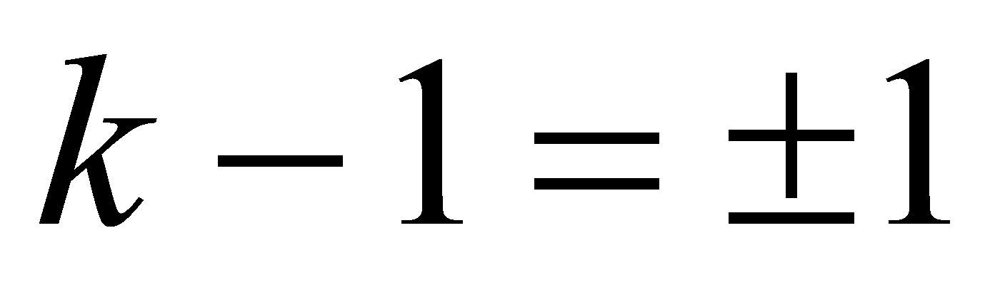
或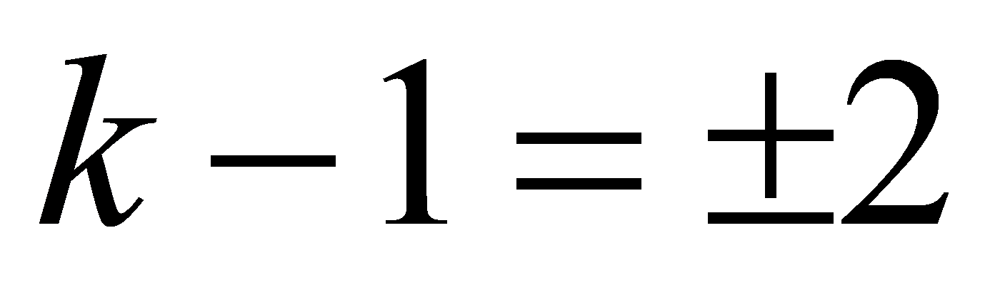
或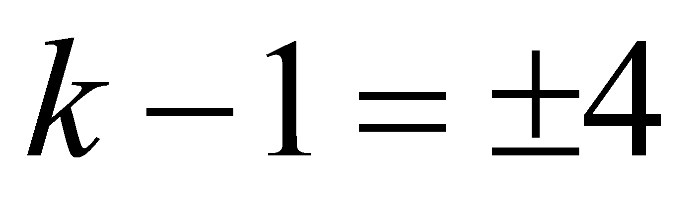
，解得：
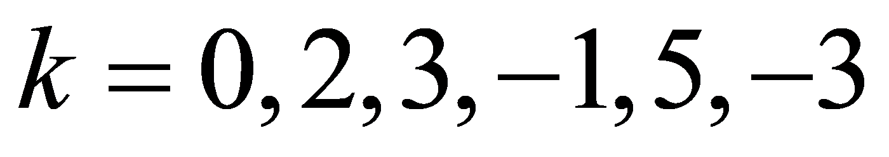
，则符合条件的所有整数的值的和为．
故答案为：6．
2．（23-24七年级上·湖北恩施·阶段练习）若关于x的方程的解是整数，则非负整数m的值为 ．
【答案】0或1或3
【知识点】方程的解
【分析】本题主要考查了方程解的定义，先用m的代数式表示x的值，再根据方程的解是整数，求非负整数m的值即可．
【详解】解：由方程，
解得：，
∵方程的解是整数，
∴非负整数m的值为0或1或3．
故答案为：0或1或3．
3．（23-24七年级上·江西上饶·阶段练习）关于x的方程 的解为整数，则符合条件的正整数m的值为 ．
的解为整数，则符合条件的正整数m的值为 ．
【答案】1或3或15
【知识点】解一元一次方程——拓展
【分析】本题考查了一元一次方程的解，先将方程化简为，根据方程的解为整数，得到关于m的方程，解出并找出符合题意的m的值即可得出答案，解题的关键是熟练掌握解方程的步骤．
【详解】，
去分母得：，
去括号得：，
移项得：，
合并同类项得：，
∵方程的解为整数，
∴或，
解得： 或3或
或3或 或15，
或15，
又∵m为正整数，
∴符合条件的正整数m的值为1或3或15，
故答案为：1或3或15．
4．（23-24七年级下·重庆·阶段练习）已知关于的方程 的解为负整数，则整数的所有取值的和为 ．
的解为负整数，则整数的所有取值的和为 ．
【答案】
【知识点】解一元一次方程（三）——去分母
【分析】本题主要考查了解一元一次方程，先解一元一次方程得到，再根据方程的解为负整数求出符合题意的所有的a的值，最后求和即可得到答案．
【详解】解：
去分母得：，
去括号得：，
移项得：，
合并同类项得；，
系数化为1得：，
∵关于的方程的解为负整数，
∴或或或，
∴ 或或
或或 或，
或，
∴整数的所有取值的和为
故答案为：．
【考点六 一元一次方程含字母参数的新定义型问题】
例题：（24-25七年级上·黑龙江哈尔滨·阶段练习）解一元一次方程时，发现这样一种特殊情况：的解为 ，恰巧
，恰巧 ，我们将这种类型的方程做如下定义：如果一个方程
，我们将这种类型的方程做如下定义：如果一个方程 的解满足
的解满足 ，则称它为“巧合方程”，请解决以下问题．
，则称它为“巧合方程”，请解决以下问题．
(1)请判断方程 是否是巧合方程：______（直接写“是”或“不是”）；
是否是巧合方程：______（直接写“是”或“不是”）；
(2)已知方程是巧合方程，请求出b的值；
(3)若 和
和 都是巧合方程，请求出
都是巧合方程，请求出 的值．
的值．
【答案】(1)是
(2)
(3)
【知识点】解一元一次方程（三）——去分母、解一元一次方程——拓展
【分析】本题主要考查了一元一次方程的解，本题是阅读型题目，理解题干中的新定义并熟练应用是解题的关键．
（1）解原方程，利用“巧合方程”的定义进行验证即可；
（2）先解方程，再根据“巧合方程”定义，建立关于b的方程求解即可；
（3）同理（2）求出 ，n的值，代入计算即可．
，n的值，代入计算即可．
【详解】（1）解：
 ，
，
 ，
，
是巧合方程；
（2）解：
 ，
，
方程是巧合方程，
 ；
；
（3）解：

，
方程是巧合方程，
 ，即
，即 ，
，
解得： ；
；
解得：，
方程是巧合方程，
，
 ，
，
 ，
，
，
解得： ，
，
 ．
．
【变式训练】
1．（24-25七年级上·全国·单元测试）定义：如果两个一元一次方程的解互为相反数，我们就称这两个方程为“兄弟方程”．如方程 和
和 为“兄弟方程”．
为“兄弟方程”．
(1)若关于x的方程 与方程是“兄弟方程”，求m的值；
与方程是“兄弟方程”，求m的值；
(2)若两个“兄弟方程”的两个解的差为6，其中一个解为n，求n的值；
(3)若关于x的方程 和
和 是“兄弟方程”，求m的值．
是“兄弟方程”，求m的值．
【答案】(1)
(2)
(3)
【知识点】解一元一次方程（一）——合并同类项与移项、解一元一次方程（三）——去分母、方程的解
【分析】本题主要考查了解一元一次方程，一元一次方程解的定义：
（1）先解方程得，再由“兄弟方程”的定义得到关于x的方程：的解为 ，据此把代入方程中求出m的值即可；
，据此把代入方程中求出m的值即可；
（2）根据“兄弟方程”的定义得到另一个解为 ，进而得到或，解方程即可；
，进而得到或，解方程即可；
（3）解方程得，解方程得 ，根据“兄弟方程”的定义得到
，根据“兄弟方程”的定义得到 ，解方程即可．
，解方程即可．
【详解】（1）解：解方程得，
∵关于x的方程：与方程是“兄弟方程”，
∴关于x的方程：的解为，
∴，
∴；
（2）解：∵两个“兄弟方程”的两个解中有一个解为n，
∴另一个解为，
∵这两个解的差为6，
∴或，
解得；
（3）解：解方程得，解方程得，
∵关于x的方程和是“兄弟方程”，
∴，
解得．
2．（24-25七年级上·黑龙江哈尔滨·阶段练习）已知a、b为有理数，且 ，若关于x的一元一次方程
，若关于x的一元一次方程 的解为
的解为 ，则此方程为“合并式方程”．例如：
，则此方程为“合并式方程”．例如： ，∴此方程为“合并式方程”，请根据上述定义解答下列问题：
，∴此方程为“合并式方程”，请根据上述定义解答下列问题：
(1)一元一次方程是否是“合并式方程”？并说明理由；
(2)若关于x的一元一次方程 是“合并式方程”，且它的解为
是“合并式方程”，且它的解为 ，求a、b的值．
，求a、b的值．
【答案】(1)不是合并式方程，理由见解析；
(2)．
【知识点】方程的解、解一元一次方程（三）——去分母、已知式子的值，求代数式的值
【分析】（1）根据“合并式方程”的定义进行计算即可；
（2）由“合并式方程”的定义可得 ，解方程组即可．
，解方程组即可．
本题考查一元一次方程的解，解一元一次方程，已知式子的值求代数值的值，理解一元一次方程的解的定义以及“合并式方程”的定义是解决问题的关键．
【详解】（1）解：依题意，一元一次方程的解为，
而，
∴一元一次方程不是“合并式方程”；
（2）解： 关于的一元一次方程是“合并式方程”，且它的解为，
，
即 ，
，
∵，它的解为，
∴
把代入
得
解得 ，
，
再把代入
解得 ，
，
答：．
3．（23-24七年级下·浙江金华·开学考试）定义：如果两个一元一次方程的解之和为1，我们就称这两个方程为“美好方程”．例如：方程 和
和 为“美好方程”．
为“美好方程”．
(1)方程与方程 是“美好方程”吗？请说明理由；
是“美好方程”吗？请说明理由；
(2)若关于x的方程 与方程
与方程 是“美好方程”，求m的值；
是“美好方程”，求m的值；
(3)若关于x方程 与
与 是“美好方程”，求n的值．
是“美好方程”，求n的值．
【答案】(1)不是“美好方程”，理由见解析
(2)
(3)
【知识点】解一元一次方程（一）——合并同类项与移项、解一元一次方程——拓展
【分析】本题主要考查解一元一次方程以及“美好方程”的定义，熟练掌握解一元一次方程是解题的关键．
（1）解出方程的解即可判断；
（2）求出关于的方程的解，根据两个一元一次方程的解之和为1求出答案即可；
（3）求出关于的方程的解，根据两个一元一次方程的解之和为1求出答案即可；
【详解】（1）解：的解为，
的解为 ，
，
，
故不是“美好方程”；
（2）解：的解为 ，
，
的解为 ，
，
根据题意可得： ，
，
解得；
（3）解：的解为，
的解为，
根据题意可得 ，
，
解得．
4．（24-25七年级上·北京·阶段练习）观察下列两个等式： ，
， ，给出定义如下：我们称使等式成立的一对有理数a，b为“成达数对”，记为
，给出定义如下：我们称使等式成立的一对有理数a，b为“成达数对”，记为 ，如：数对
，如：数对 、
、 都是“成达数对”．
都是“成达数对”．
(1)数对 、
、 中是“成达数对”的是______；
中是“成达数对”的是______；
(2)若是“成达数对”，求a的值；
(3)若 是“成达数对”，则
是“成达数对”，则 ______“成达数对”（填“是”、“不是”或“不确定”）；
______“成达数对”（填“是”、“不是”或“不确定”）；
(4)请再写出一对符合条件的“成达数对”．（不能与题目中已有的数对重复）
【答案】(1)
(2)；
(3)不是
(4) 是“成达数对”，（答案不唯一）
是“成达数对”，（答案不唯一）
【知识点】整式的加减运算、解一元一次方程（一）——合并同类项与移项、有理数四则混合运算
【分析】本题考查了新定义运算，有理数的混合运算，一元一次方程，整式的运算，理解新定义是解题的关键．
（1）根据新定义进行计算即可求解；
（2）根据新定义列出一元一次方程，解方程即可求解；
（3）根据新定义计算进而即可求解．，
（4）根据题意，取 代入
代入 ，解方程即可求解．
，解方程即可求解．
【详解】（1）解：∵，
∴不是“成达数对”，
∵，
∴是“成达数对”；
故答案为：；
（2）解：∵ 是“成达数对”，
是“成达数对”，
∴ ，
，
解得；
（3）解：不是，
∵是“成达数对”，
∴，
∵，，
∴ ，
，
∴不是“成达数对”；
故答案为：不是；
（4）解：答案不唯一
由（3）中是“成达数对”，满足，
取，则 ，解得，
，解得，
∴是“成达数对”．